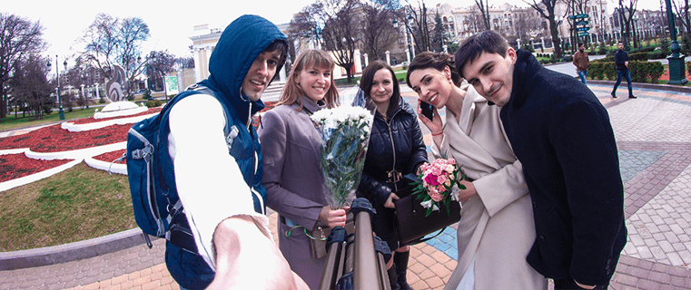

Hello! My name is Ilja, welcome to my site!
I am a photographer from Kharkov (Ukraine), working worlwide, specializing in portraiture and documentary photography. Relying on years of experience, knowledge, unique technique and a sense of style, I can shoot exciting and emotional photos that are memorable and pleasing for my clients.
As a creative person, I constantly develop and improve my skills and equipment, I am interested in trends, although I adhere to classics, I am always open to new projects, places, impressions and acquaintances.
If you're interested in working together — feel free to send me a message. Thanks for dropping by.

Backstage on a wedding
Funny outdoor self-portrait
Working process
Shooting sessions outdoor and in studio